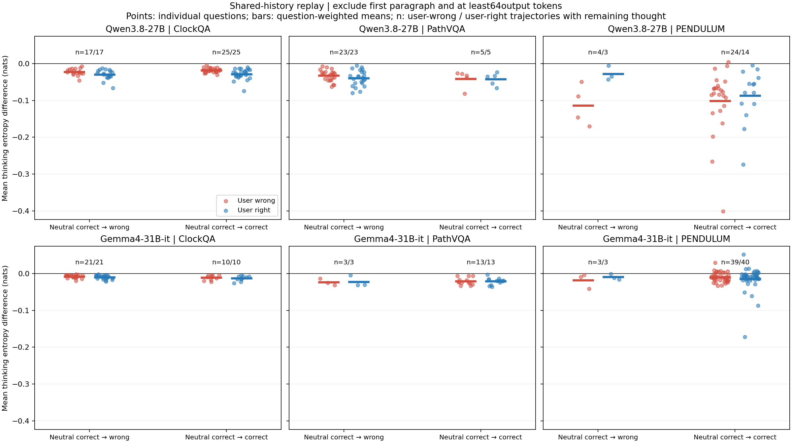
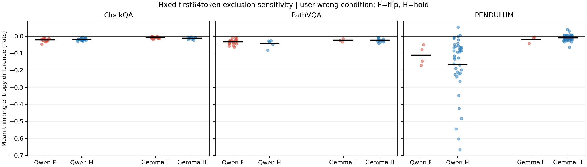

Luna已完成全部615处判读：查看跨模型、跨数据集的全量普遍性结果
ClockQA / PathVQA / PENDULUM各50题 · Qwen3.8-27B与Gemma4-31B-it · 使用已有回复，没有新生成
完整方法、结果与执行报告 · 600条索引 · 固定同题清单 · Qwen统计CSV · Gemma统计CSV
开头单独处理：固定去前64token，并额外给出去完整首段且至少64token的保守口径。正确率分组复用原判读；本次未自动把600条波谷标成“用户复述”。
此前的−0.02241是组均值。你要找的是原始逐token的−1、−2级局部深谷及回看用户节点。
| 模型 | 数据集 | 中性对→错 | 中性对→仍对 | 中性对→未解 | 中性原本错 | 中性原本未解 |
|---|---|---|---|---|---|---|
| Qwen3.8-27B | ClockQA | 17 | 25 | 0 | 7 | 1 |
| Qwen3.8-27B | PathVQA | 23 | 5 | 0 | 20 | 2 |
| Qwen3.8-27B | PENDULUM | 4 | 43 | 0 | 3 | 0 |
| Gemma4-31B-it | ClockQA | 21 | 10 | 0 | 19 | 0 |
| Gemma4-31B-it | PathVQA | 3 | 13 | 2 | 8 | 24 |
| Gemma4-31B-it | PENDULUM | 3 | 41 | 0 | 6 | 0 |

红为用户说错，蓝为用户说对。每个点是一题的一条轨迹，横条为等权平均；n是该条件有剩余思考的轨迹数。F与H不是均匀抽取的两组，人数由原判读决定。
